Design research · Interaction design
A design investigation into food waste and accessibility in apartment buildings.
Most apartment towers move rubbish the same way they did fifty years ago: a single chute, often broken, rarely cleaned, and impossible to use well if you have a pram or a walker. This project asks what happens when you treat that chute as a designed interface rather than a hole in the wall.
Where it started
I live in a high-rise where the waste chutes are a daily frustration. In my own experience I do not even use them; they are often disgusting, and not properly maintained or cleaned. When something does go wrong, the whole system simply stops.
In September 2024 a notice went up in our lift: the chute had been blocked for days because rubbish was stuck inside it, and residents were asked to carry waste down to the ground floor instead. That letter, and the broken chutes behind it, became the starting point for this project.
A piece of building infrastructure that thousands of people share every day, and almost no one has designed for the person actually standing in front of it.
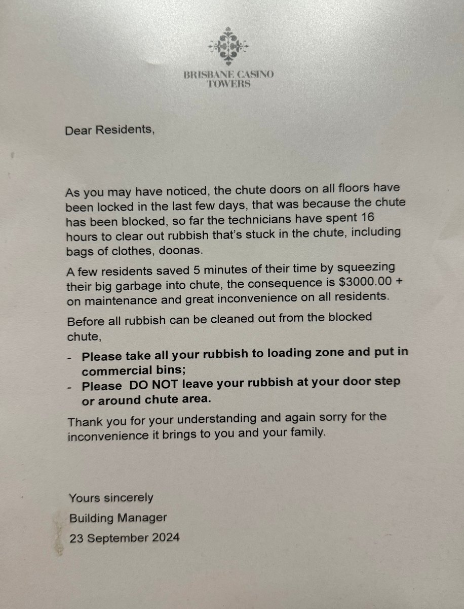
Phase 1 · Understanding the problem
Building waste chutes are designed to streamline disposal in multi-storey homes, but they are frequently underused or broken, and they are hardest of all on people with accessibility needs. The World Bank notes that waste disposal systems often fail to meet residents' needs, and that food waste in particular is mishandled where access to proper disposal is poor (World Bank, 2018).
Food waste is a large and growing share of the problem. The United Nations Environment Programme and the Food and Agriculture Organization report that food waste accounts for roughly 30% of urban waste, with a significant portion coming from residential buildings (UNEP, 2021; FAO, 2021). When the chute is blocked or unpleasant, people leave waste on the ground or put recyclables in the wrong stream, and the problem compounds.
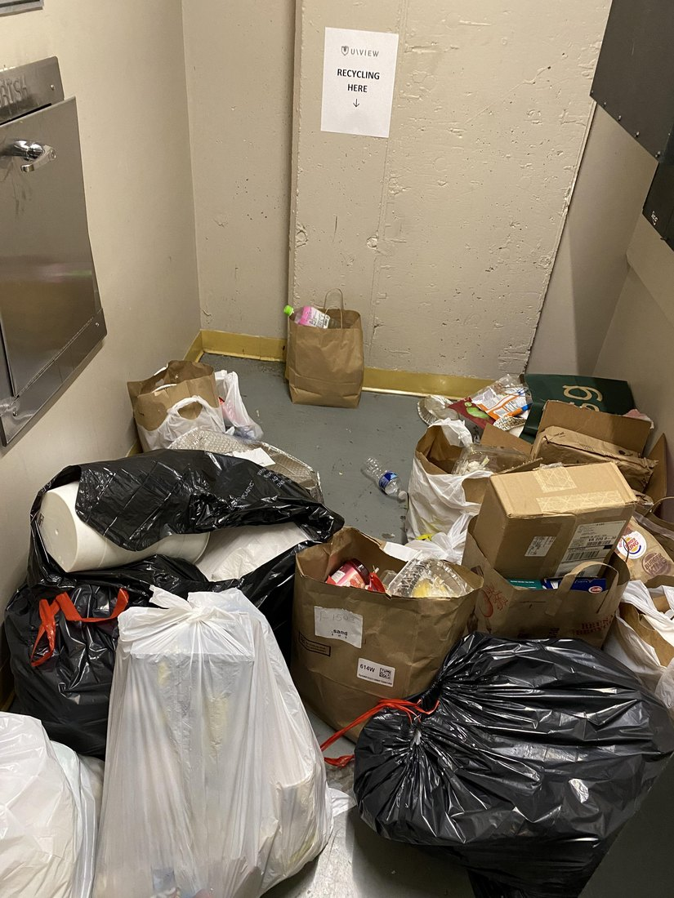
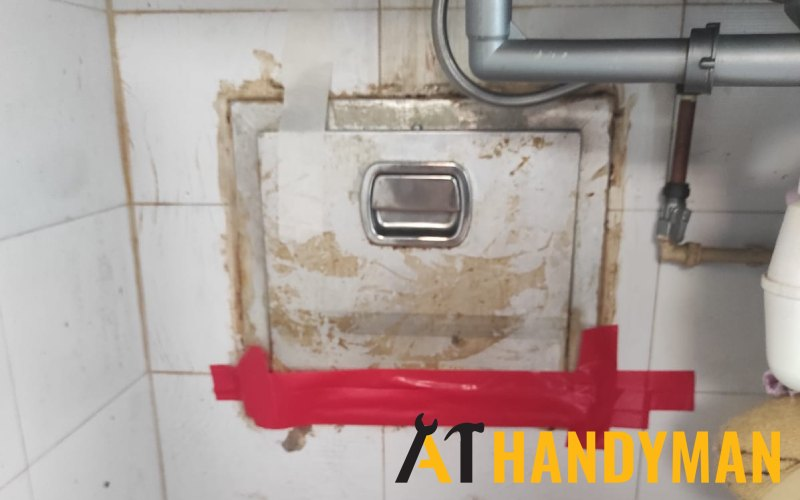
Phase 1 · Who it affects
People with prams, walkers or disabilities consistently report difficulty reaching bins and chutes (Institute for Urban Development, 2022). Heavy doors, awkward heights and poor lighting turn a thirty-second task into a barrier. Accessibility standards already point the way: disposal points should sit lower and wider, with good lighting, and can use buttons or sensors so they open without force or touch (U.S. Department of Justice, 2010; U.S. Access Board, n.d.).
Framing the chute as an accessibility problem, rather than a plumbing one, reframes the whole design brief. The question stops being "how do we unblock it" and becomes "how do we make disposal effortless, hygienic and correct for everyone in the building".
Phase 1 · Precedents
Cities such as Stockholm and Barcelona use pneumatic systems that move waste through underground tubes to a central facility, cutting truck traffic, emissions and noise while improving cleanliness and separation at the source. The upfront cost is high, but as a long-term piece of urban infrastructure it points at what "designed" waste movement can look like (The Renewables, 2023).
Seoul runs a high-tech food-waste programme using RFID-based bins that measure how much each household throws away, encouraging people to reduce waste and turning what is collected into compost and biogas. It is one of the clearest examples of designing for behaviour, not just collection (Broom, 2019).
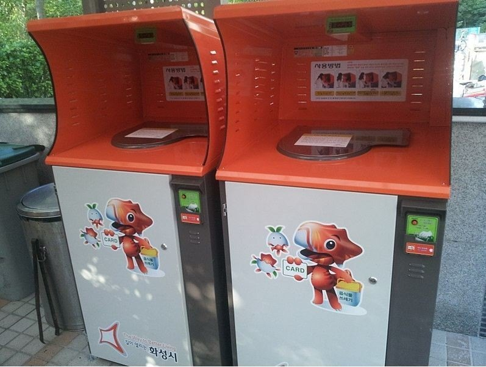
None of these treat the chute itself as an accessible, food-separating interface. That gap is exactly what this project explores.
Phase 2 · Ideation
Three questions drove the ideation. How could a chute be improved for food waste and waste in general? What materials and modifications would make it usable for people with mobility issues? And how could it actively encourage correct separation?
Early thinking pointed toward lighter, eco-friendly materials such as recycled aluminium and bamboo so the door is easier to open; lower and wider openings with buttons or sensors; brighter, better-lit rooms; and a smart chute that detects the type of waste and routes it to the right stream with no need to touch anything.
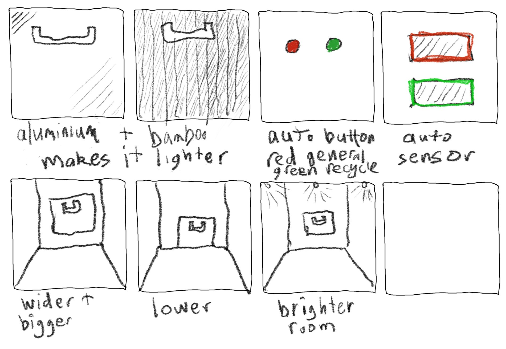
Phase 2 · The concept
The concept repurposes the existing chute rather than ripping it out, layering three changes onto infrastructure buildings already have.
Materials matter to the brief: early prototypes assumed plastic, but later iterations moved to recycled aluminium and bamboo, chosen for strength and low environmental impact while staying light enough to open easily.
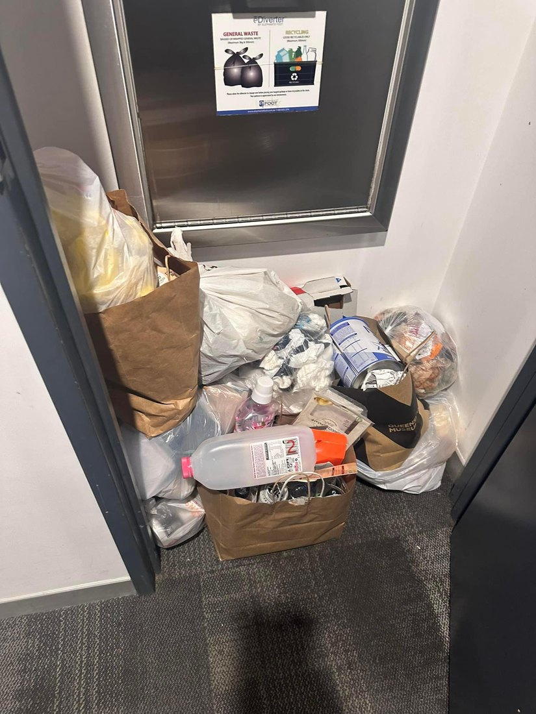
Phase 3 · Concept rationale
In Australian high-rise buildings, food waste is typically thrown down traditional chutes, leading to contamination, inefficient recycling and more landfill (Australian Bureau of Statistics, 2023). Valuable organic material that could be composted or turned into bioenergy is lost, because the chute has no way to separate or monitor what goes into it (Waste Management Review, 2023).
The proposed system adds three things to the existing chute: dual chutes for separate organic disposal; smart sensors that track bin levels and odour and feed real-time data to building managers; and resident education to support correct separation. Together they target both the efficiency problem and the behaviour problem.
The values underneath are sustainability, community responsibility and innovation. The concept aligns with Australia's National Food Waste Strategy goal of halving food waste by 2030 (Department of Climate Change, Energy, the Environment and Water, 2023), and it asks residents to take an active part rather than designing them out.
Phase 3 · Viability
The current alternatives are composting-unit providers and traditional chute systems. Neither integrates with high-rise chute infrastructure to separate food waste, so contamination of the recycling stream stays high. The differentiation here is an integrated solution: on-site composting and automated sorting in one system, for a cleaner recycling stream and localised food-waste processing (SUEZ, 2023).
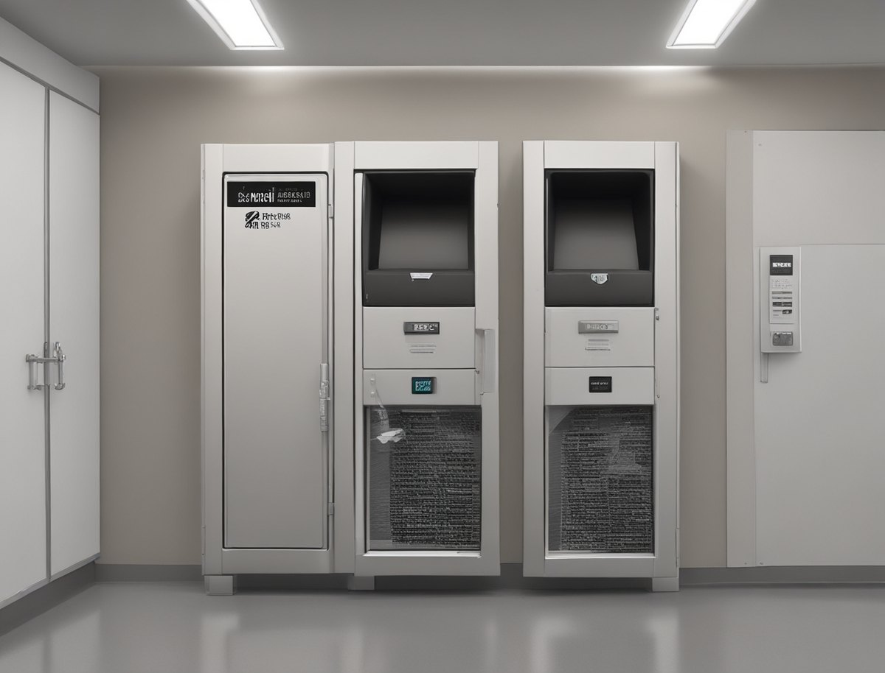
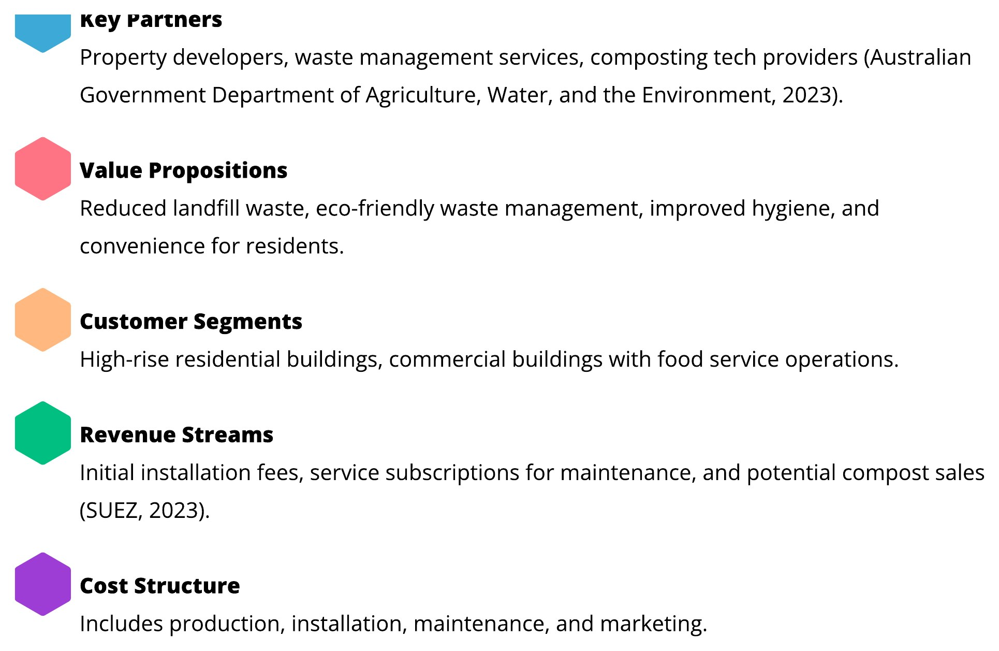
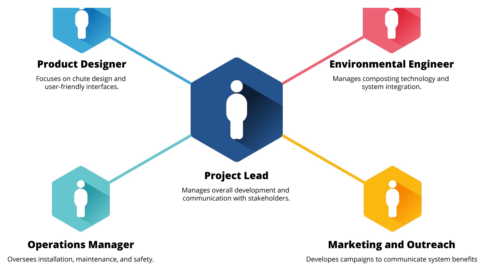
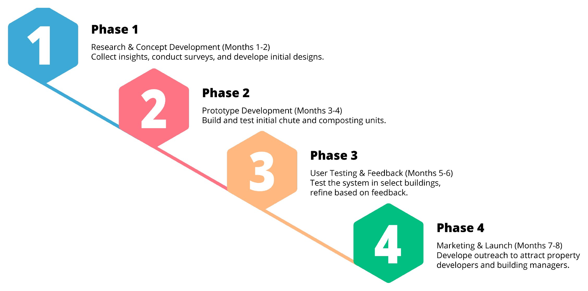
This project began in the Applied Design: Creative Entrepreneur unit at the University of Tasmania, and is becoming an ongoing line of inquiry. The next phase carries it into a Graduate Diploma in Interaction Design at the University of Queensland: primary research with residents and building managers, a working prototype of the sensor door and dual-stream opening, and testing in a real Brisbane building rather than on paper.
The throughline stays the same. A piece of shared infrastructure that everyone uses and no one has designed for is a genuine, open design problem, and that is exactly the kind worth staying with.
Sources & credits
World Bank. (2018). What a Waste: An updated look into the future of solid waste management.
United Nations Environment Programme. (2021). Food Waste Index Report 2021.
Food and Agriculture Organization of the United Nations. (2021). Food loss and waste database.
United Nations Environment Programme. (2022). Urban food waste increase, 2022.
Cummings, S. (2023). Aging infrastructure: challenges and solutions for waste management in residential buildings. Journal of Urban Planning, 45(3), 301–320.
Institute for Urban Development. (2022). Users with prams, walkers or disabilities report challenges in reaching bins: Accessibility Report UK.
Australian Bureau of Statistics. (2023). Waste Management Services.
Waste Management Review. (2023). Emerging trends in waste management for commercial and residential properties.
Department of Climate Change, Energy, the Environment and Water. (2023). National Food Waste Strategy: Halving Australia's food waste by 2030.
Brisbane City Council. (2023). A new world city: Brisbane City Council in focus.
The Renewables. (2023). Automated waste collection systems (AWCS): revolutionising waste management.
Broom, D. (2019). How Seoul, South Korea reduced food waste by 95%. World Economic Forum.
SUEZ. (2023). Integrating composting solutions in urban waste management.
U.S. Department of Justice. (2010). 2010 ADA Standards for Accessible Design.
U.S. Access Board. (n.d.). Guide to the ADA accessibility standards.
Zero Waste Design Guidelines. (n.d.). Collection and urban design best practice strategies.
Blocked-chute notice and food waste beside the lift: photographs by Lewi Hirvela (2024).
Blocked chute room: u/UnknownError90, Reddit.
Patched bin chute: A Handy Man (2022).
Integrated-units render: AI-generated concept imagery via Shapes, Inc.
RFID food-waste machines, Seoul: Wikimedia.
Sketches, business model canvas, team structure and timeline: author's own.